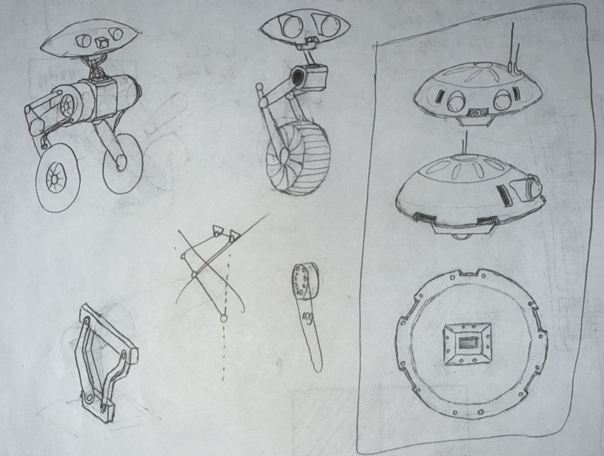
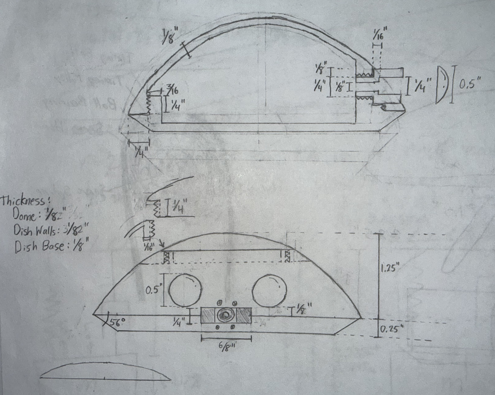
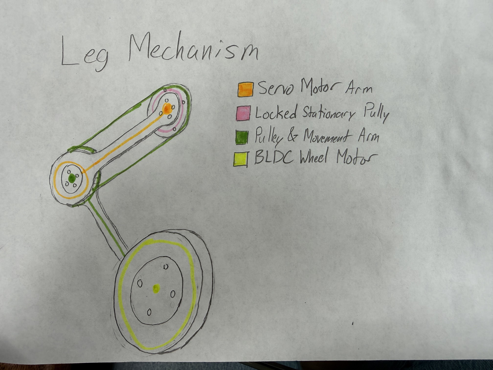
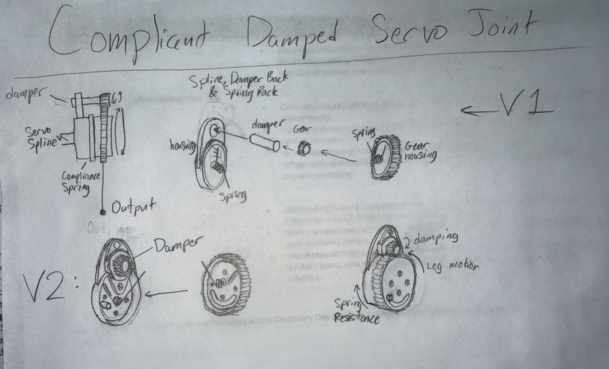

Body ideas and overall robot form concepts

Active Development / Wheeled Bipedal Robotics
Modular wheeled bipedal robot built around straightforward construction, accessible parts, ESP32-based control, ROS 2 telemetry, and a leg mechanism designed to keep vertical foot movement linear without adding knee motors.

BD-2 is a wheeled bipedal balance robot designed around cost, modularity, and a build process that can double as an instruction manual. The project is meant to teach full-system robotics through a practical robot architecture: mechanical layout, electronics packaging, motor control, telemetry, PID tuning, and iterative prototyping.
The electrical system is based on an ESP32 running C++, with a 12V battery supplying motor power and a 5V buck converter supporting the smaller electronics. The design intentionally avoids a custom PCB for now, keeping the system modular and easier to understand, modify, and rebuild.
Mechanically, the robot uses two digital servo hip motors, two BLDC gimbal motors for the wheels, a 3D printed body, M3 screws, and heat-set threaded inserts. The leg concept uses a pulley mechanism instead of a four-bar linkage so the foot can move vertically in a more linear path without adding a second pair of BLDC motors at the knees.
Body ideas and overall robot form concepts

Leg mechanism concept combining servo-controlled pulley linkage and a BLDC wheel motor

Compliant damped servo joint concept for leg impact absorption

The project is currently moving from concept work into subsystem development. Electrical work is focused on ESP32 control, servo and BLDC motor actuation, power distribution, and supporting feedback systems. Software work is centered on C++, ROS 2 over Wi-Fi, telemetry graphing, PID tuning, and Bluetooth controller tuning.
The next stage is to continue developing the leg mechanism and first full CAD assembly, including pulley/cable routing, fastener selection, and printed component design. As the robot matures, this page will be updated with CAD progress, build photos, electronics integration, control testing, and lessons learned from each iteration.